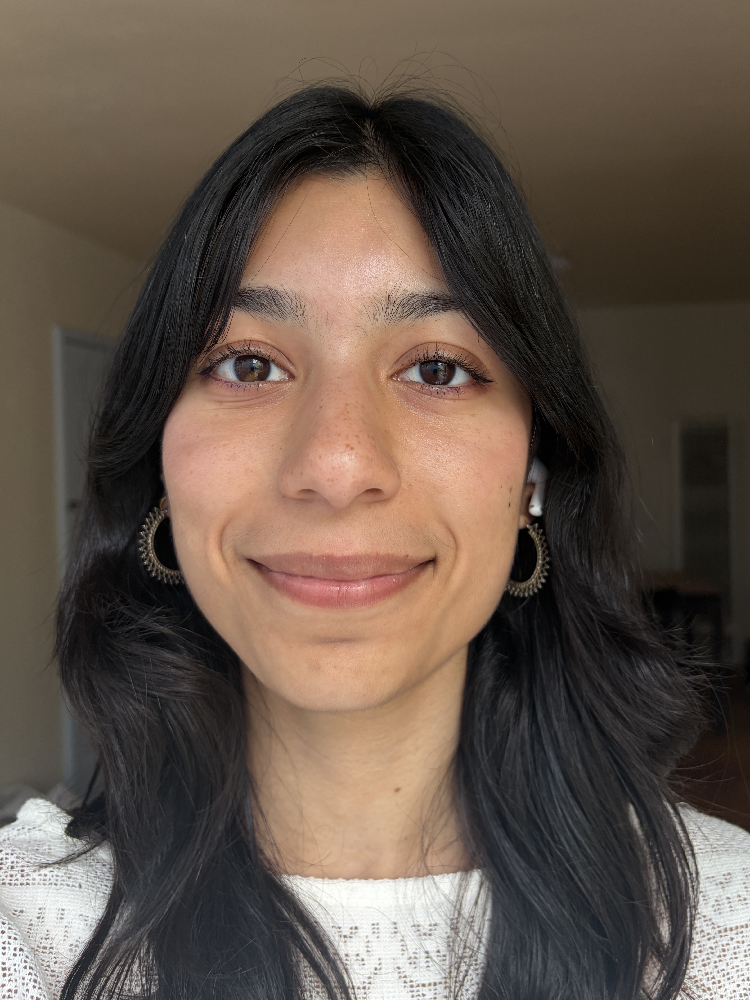
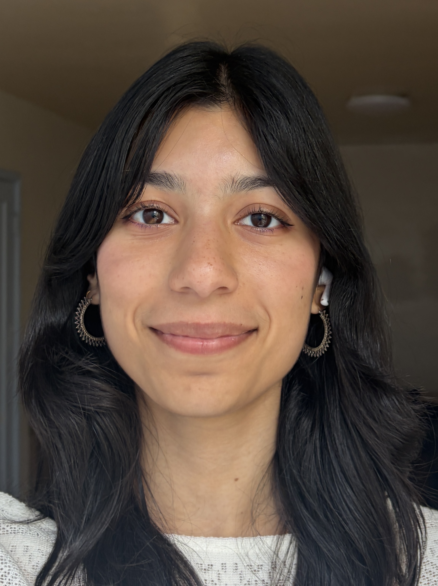
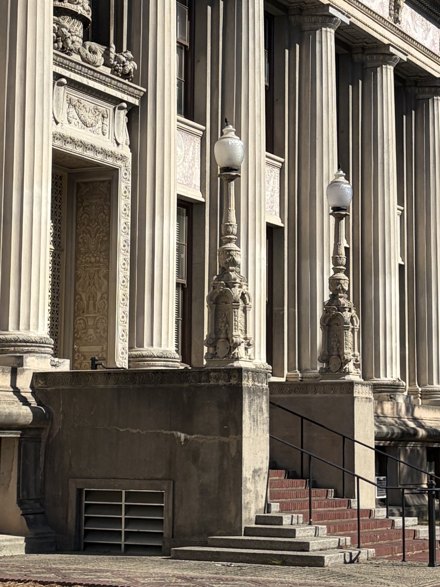
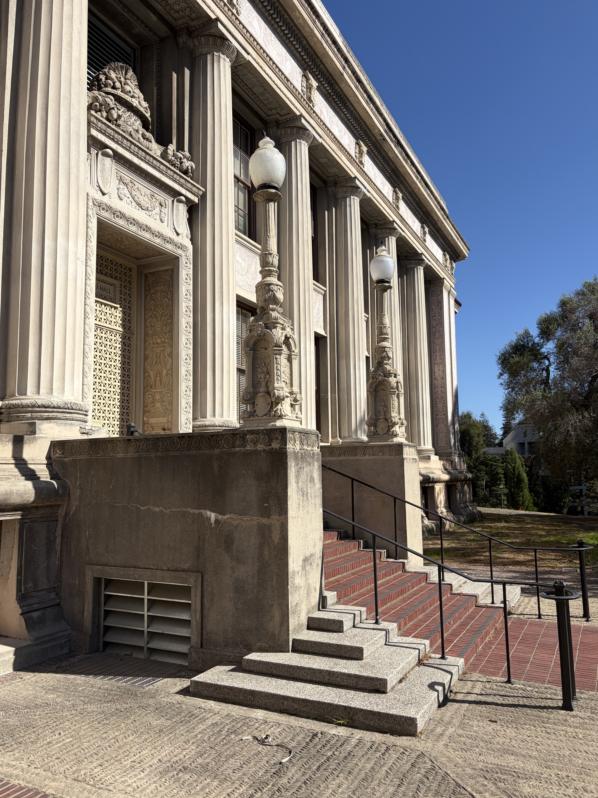
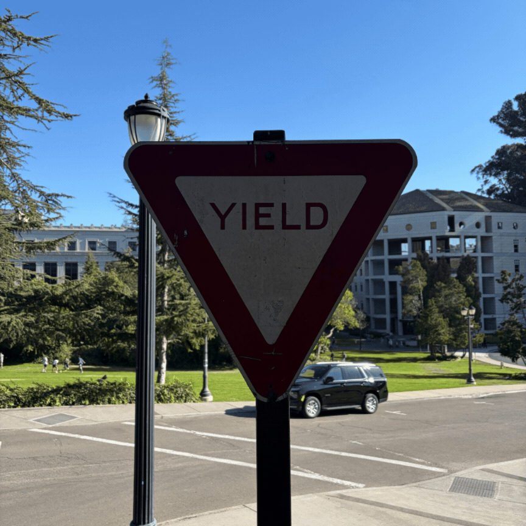

The photo from up close distorts my face, while the one from farther away seems more accurate. I think this is because in the image from up-close, the relative distance of my features from the lense of the camera more significantly impacts the final image result.


While the pillars are about the same size in both images, the zoomed in photo has less visual depth and misses out on details like the sky and end of the building.


As I step back and zoom, there is less and less visible in the background, while the yield sign remains a relatively consistent size.
